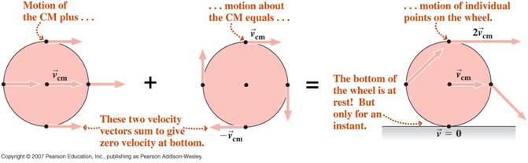

Combination of Translational and Rotational Motion

"Now, my own suspicion is that the
Universe is
not only queerer than we suppose, but queerer than we can suppose”
J. B. S. Haldane – Possible
Worlds (1927)
- The general motion of a rigid body may be considered as a combination of two distinct parts:
1.
Translational
motion of the centre of mass, as if all the mass of the body
was
located there
and,
2.
Rotational
motion of the body about an axis through its centre of mass.
- The simplest example of these statements is the rolling motion (without slipping) of a sphere or cylinder. The motion can be considered as simple rotational motion about an instantaneous axis through the point of contact with the surface, as shown at the right in the diagram below. Alternatively, to the left of the equals sign we see that the motion can be considered a combination of translational motion and rotational motion about the centre of mass.

- The total kinetic energy of rolling motion is written
where ICM is the moment of inertia about the axis through the centre of mass, vCM is the velocity of the centre of mass and is related to the angular velocity in the equation by,
R being the
radius of
the
sphere/cylinder.

"Tonight I speak to you
on behalf of the National Society of Incontinents....excuse
me
a
moment"
(Exits stage)
Ronnie Barker

Dr. C. L. Davis
Physics Department
University of
email: c.l.davis@louisville.edu